What is a Generative Adversarial Network (GAN) and what is it used for?
A GAN is a machine learning model used to generate unique images. It is called an “adversarial” network because there are two pieces fighting against each other to create the best outcome.
The two models working inside a GAN are the Generator and the Discriminator. These two pieces challenge each other, trying to catch the other in an error, which makes each program better in the end.
Throughout this blog you will see examples from code written with the help of an AI model (Claude by Anthropic). This is to help visualize and understand what is going on inside the GAN
The Generator
In a GAN, the Generator’s job is to produce unique images. The problem the Generator faces is knowing what to come up with when creating these unique images. The first time the Generator runs it, has no data to work with, so it just comes up with nonsense. See Fig1
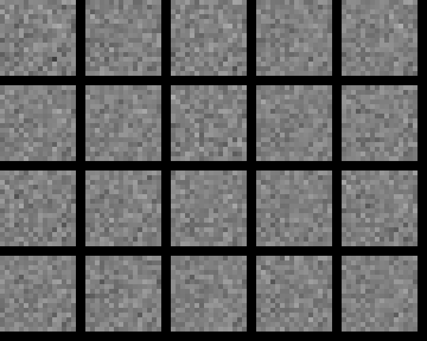
Fig1: A GAN Generator’s first attempt at making an image
This initial output (a bunch of visual noise) isn’t what we want. In order to get a more useful output we need to teach the Generator that this output is not what we want. This is where the Discriminator comes in.
The Discriminator
The Discriminator compares the generated images with real images from a training dataset. In this example our dataset consists of small pixelmaps of 5-point stars, see Fig2.
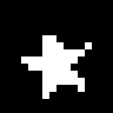
Fig2-a
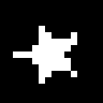
Fig2-b
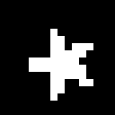
Fig2-c
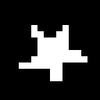
Fig2-d
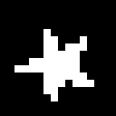
Fig2-e
The Discriminator looks at the real dataset, and the generated images and tries to determine whether a given image is fake (from the Generator) or real (from the dataset).
Two Real World Examples
A Real (Fake) Example of a Generator and Discriminator
A Counterfeiter is trying to make fake money, and the Police are trying to catch him. It’s a game of cops and robbers. The Counterfeiter makes their first $1 bill and uses it at a store. The Police find the bill and compare it to a real $1 bill to determine the one from the store is a fake. The Counterfeiter is caught!
The Counterfeiter looks at the failed fake and tries again, changing some of the pieces of the $1 bill to make it look more realistic. He brings this $1 bill back to the store and tries to use it. When the bill is intercepted by the Police they check it against what they know as real money. This time, the fake bill looks so real that the Police can’t tell the difference! The counterfeit bill never gets caught.
A Real (Real) Example of an Adversarial Network
This technique of an adversarial network is also a common approach for solving real security issues. In Cyber Security it is common to have a team, the Good Guys and a team, the Bad Guys. The Good Guys try to create security protocols that prevent malicious users from getting into a network, protecting user and company data/resources.
But how do you know if the security measures are good? The Bad Guys go in and try to break down all the work the Good Guys did. This allows for companies to find problems in security in a safe and manageable way, instead of allowing real bad guys (hackers and other criminals) to find the weak spots first.
Generator
Discriminator
Adversarial Network
A Counterfeiter Creating Fake Money
The Police Investigating the Money
Ongoing Battle Between Counterfeiters and Police
Bad Guys
Good Guys
Cyber Security Defense Teams
Putting it Together
In a GAN system the Discriminator is fed both real and fake images. Each time the Discriminator is learning how to tell them apart. Whenever a Discriminator correctly predicts an image, it gets positive feedback; each time it’s wrong the Discriminator gets negative feedback. This process of getting feedback is called backpropagation.
The Generator is also receiving immediate feedback on whether it passed the Discriminator or not. If the Discriminator fails, the Generator wins. If the Discriminator succeeds the Generator loses. Each win and loss tells the Generator if it’s doing a good job creating the image.
The Math
The mathematic definition of this competition can express as follows:
\[
\min_G \max_D V(D,G)
=
\mathbb{E}_{x\sim p_{\text{data}}}[\log D(x)]
+
\mathbb{E}_{z\sim p_z}[\log(1-D(G(z)))]
\] This is a standard GAN equation where \(G\) preresents the Generator and \(D\) represents the Discriminator. The Generator takes random noise \(z\) and producs and image \(G(z)\), while the Discriminator estimates whether an image is real.
The Discriminator tries to maximize this objective by correctly identifying real images, while the Generator tries to minimize it by producing images that fool the Discriminator.
This system loops through thousands of times generating and discriminating images over and over again until the final Generator consistently beats the Discriminator.
We call these loops epochs and we can see the progress throughout the epochs in the figures below.
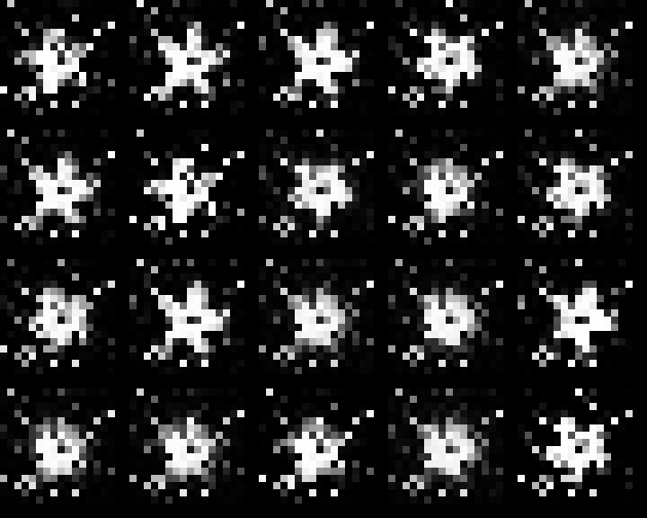
Epoch 1000
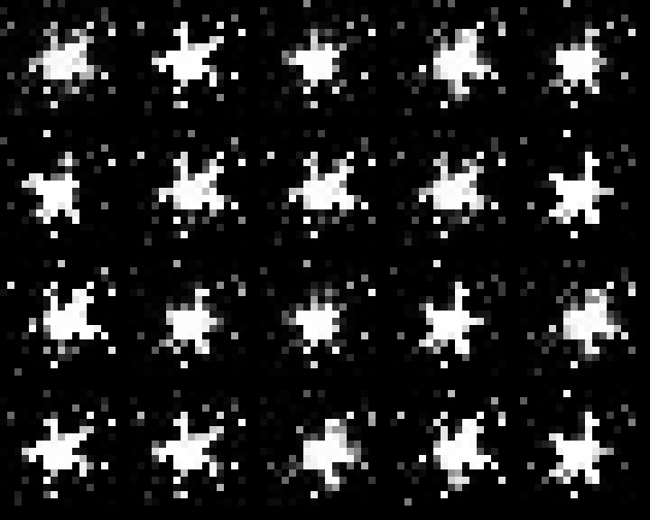
Epoch 1500
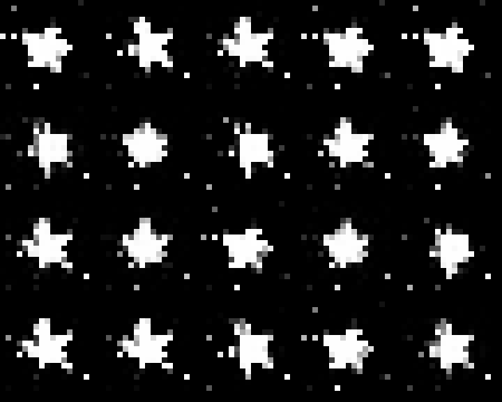
Epoch 2000
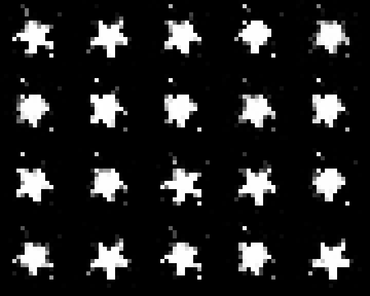
Epoch 2500
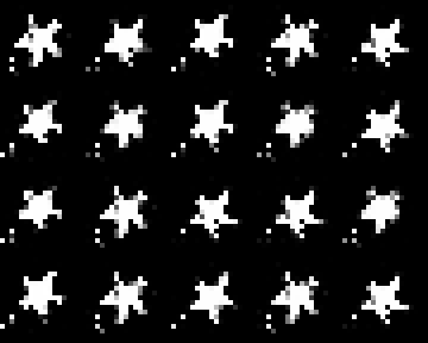
Epoch 3000
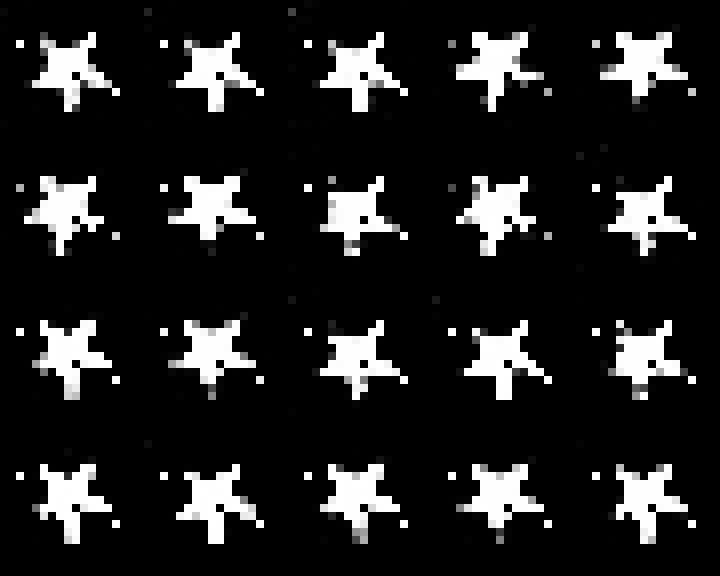
Epoch 3500
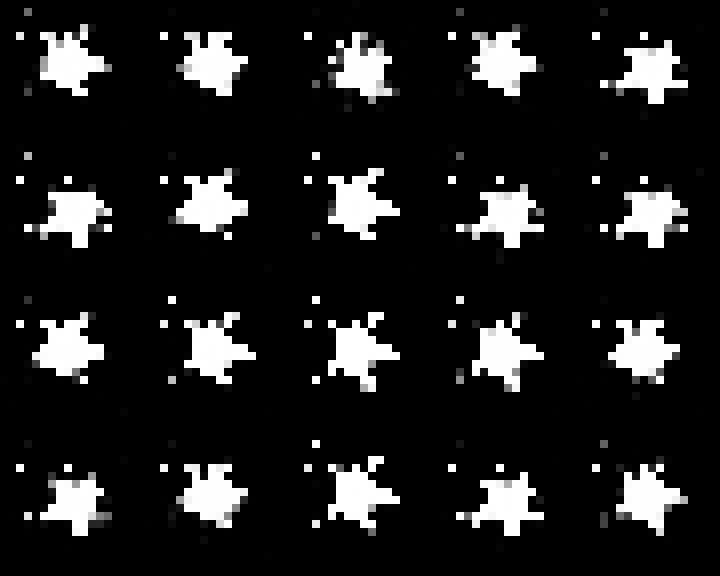
Epoch 4000
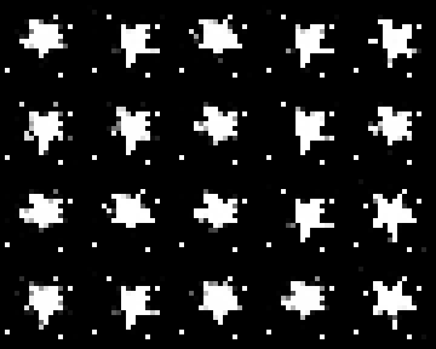
Epoch 4500
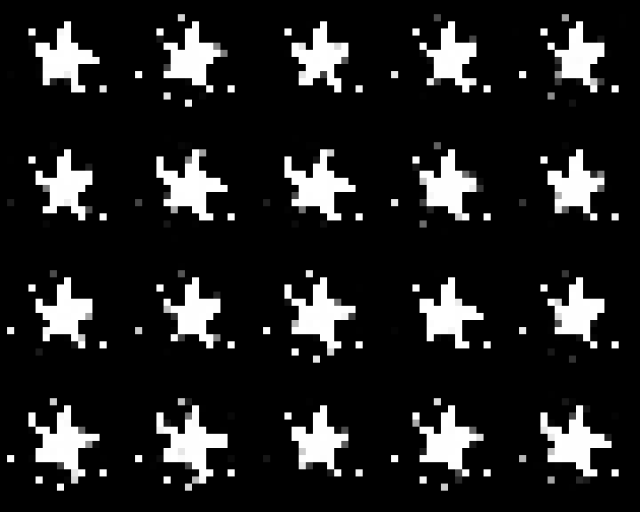
Epoch 5000
As the epochs progress the images get more and more clear, and actually start to look like the training dataset.
Try it yourself
Here is all the code used to build and train a Generator and Discriminator for a GAN. Enjoy!
Necessary Imports, Macros and Helper Functions
import mathimport timefrom pathlib import Pathimport numpy as npimport torchimport torch.nn as nnfrom PIL import ImageIMG_SIZE =16# images are IMG_SIZE x IMG_SIZERADIUS =2.5# circle radiusNOISE_DIM =32N_REAL_SAMPLES =2000# how many synthetic "real" images to generateEPOCHS =5000SHAPE ="star"# "star" or "circle"DATA_SEED =0# fixed, so the dataset is identical every renderTRAIN_SEED =int(time.time()) # set to a fixed int for reproducible trainingtorch.manual_seed(TRAIN_SEED)# All paths are relative to the folder the .qmd / script lives inROOT = Path(".")DATA_DIR = ROOT /"data"SAMPLE_DIR = ROOT /"samples"SNAPSHOT_DIR = ROOT /"snapshots"G_PATH = ROOT /f"{SHAPE}_generator.pt"def load_dataset(name, n, data_seed=DATA_SEED):"""Load a cached dataset if it exists, otherwise generate and save it. Stored as bool (images are binary) to keep the file small. """ path = DATA_DIR /f"{name}_n{n}_seed{data_seed}.pt" mask = torch.load(path)return mask.float() *2-1# back to [-1, 1]def to_uint8(imgs):"""(-1,1) tensor -> uint8 numpy array in [0, 255]."""return ((imgs.detach().cpu().numpy() +1) /2*255).astype("uint8")def save_samples(n=5):"""Save a few real training images as individual PNGs."""for i, img inenumerate(to_uint8(REAL_DATA[:n])): Image.fromarray(img).resize((128, 128), Image.NEAREST).save( SAMPLE_DIR /f"{SHAPE}_{i}.png" )def save_grid(imgs, path, nrow=5, pad=2, scale=8):"""Save a batch of (-1,1)-range images as one PNG grid.""" imgs = to_uint8(imgs) n = imgs.shape[0] nrows_grid =-(-n // nrow) # ceil cell = IMG_SIZE + pad grid = np.zeros((nrows_grid * cell, nrow * cell), dtype="uint8")for i, im inenumerate(imgs): r, c =divmod(i, nrow) grid[r * cell: r * cell + IMG_SIZE, c * cell: c * cell + IMG_SIZE] = im Image.fromarray(grid).resize( (grid.shape[1] * scale, grid.shape[0] * scale), Image.NEAREST ).save(path)REAL_DATA = load_dataset(SHAPE, N_REAL_SAMPLES) # (N, IMG_SIZE, IMG_SIZE)
Class Definitions (Generator and Discriminator)
class Generator(nn.Module):def__init__(self):super().__init__()self.net = nn.Sequential( nn.Linear(NOISE_DIM, 128), nn.ReLU(), nn.Linear(128, 128), nn.ReLU(), nn.Linear(128, IMG_SIZE * IMG_SIZE), nn.Tanh(), # output in [-1, 1], same range as the real data )def forward(self, z):returnself.net(z).view(-1, IMG_SIZE, IMG_SIZE)class Discriminator(nn.Module):def__init__(self):super().__init__()self.net = nn.Sequential( nn.Linear(IMG_SIZE * IMG_SIZE, 128), nn.LeakyReLU(0.2), nn.Linear(128, 128), nn.LeakyReLU(0.2), nn.Linear(128, 1), # raw logit )def forward(self, x):returnself.net(x.view(x.size(0), -1))
save_samples() # Saves 5 images from the load_datasetbatch_size =64lr=2e-4print_every =500snapshot_dir = Path(SNAPSHOT_DIR)# Creating two Generator and Discriminator objectsG, D = Generator(), Discriminator() opt_g = torch.optim.Adam(G.parameters(), lr=lr, betas = (0.5, 0.999))opt_d = torch.optim.Adam(D.parameters(), lr=lr, betas=(0.5, 0.999))loss_fn = nn.BCEWithLogitsLoss()fixed_z = torch.randn(20, NOISE_DIM) # same noise for each snapshot, so we can watch it evolve# Looping throught the predetermined number of EPOCHSfor epoch inrange(1, EPOCHS +1):# Getting a random sample from the real image dataset idx = torch.randint(0, len(REAL_DATA), (batch_size,)) real = REAL_DATA[idx]# Generating an image with the generator z = torch.randn(batch_size, NOISE_DIM) fake = G(z)# === Train Discriminator === opt_d.zero_grad() real_pred = D(real) fake_pred = D(fake.detach()) d_loss = loss_fn(real_pred, torch.full_like(real_pred, 0.9)) +\ loss_fn(fake_pred, torch.zeros_like(fake_pred)) d_loss.backward() opt_d.step()# === Train Generator === opt_g.zero_grad() fake_pred = D(fake) g_loss = loss_fn(fake_pred, torch.ones_like(fake_pred)) g_loss.backward() opt_g.step()if epoch % print_every ==0or epoch ==1:print(f"epoch {epoch:5d} | D loss {d_loss.item():.3f} | G loss {g_loss.item():.3f}")with torch.no_grad(): samples = G(fixed_z) save_grid(samples, snapshot_dir /f"epoch_{epoch:05d}.png")torch.save(G.state_dict(), G_PATH)with torch.no_grad(): save_grid(G(torch.randn(20, NOISE_DIM)), ROOT /f"{SHAPE}_final.png")
epoch 1 | D loss 1.406 | G loss 0.724
epoch 500 | D loss 0.922 | G loss 1.543
epoch 1000 | D loss 0.933 | G loss 1.675
epoch 1500 | D loss 0.788 | G loss 2.348
epoch 2000 | D loss 0.633 | G loss 2.425
epoch 2500 | D loss 0.802 | G loss 2.202
epoch 3000 | D loss 0.847 | G loss 1.583
epoch 3500 | D loss 0.986 | G loss 1.968
epoch 4000 | D loss 0.549 | G loss 2.746
epoch 4500 | D loss 0.715 | G loss 2.725
epoch 5000 | D loss 0.660 | G loss 2.025